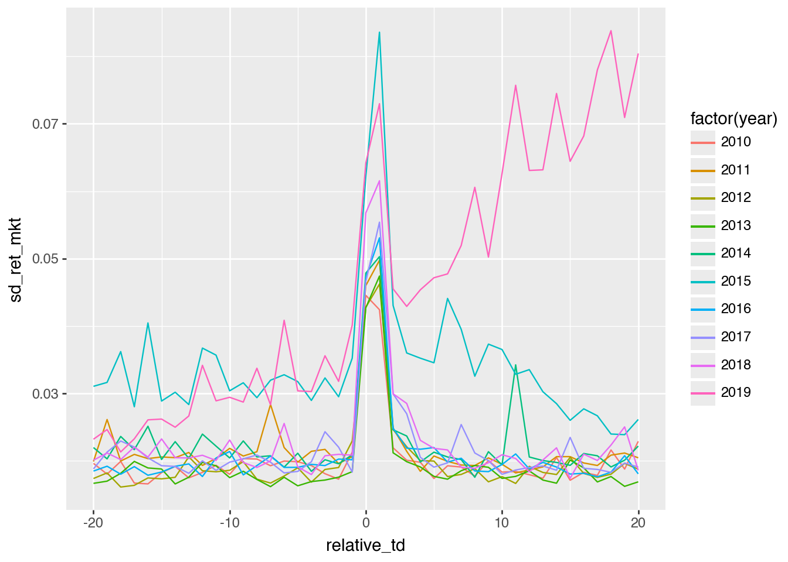
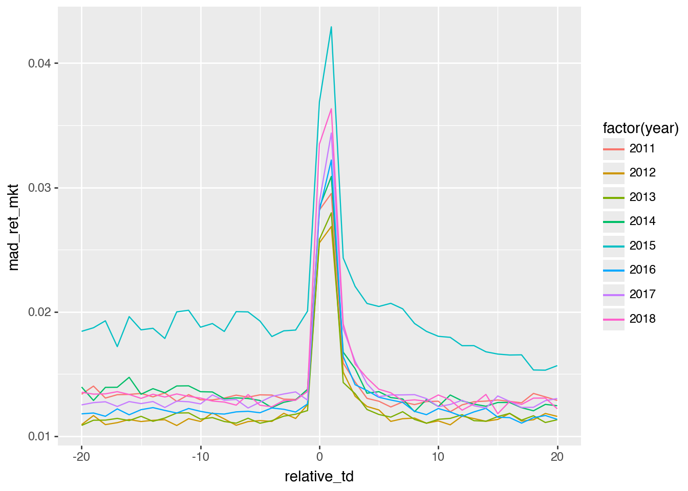

How do the research questions of Beaver (1968) and Ball and Brown (1968) differ? If there is overlap, do you think that one paper provides superior evidence to the other? Or are they just different?
Ball and Brown (1968) is primarily concerned with whether accounting numbers are meaningful. Beaver (1968) focuses on whether they appear to be “useful”, as evidenced by market reactions to earnings announcements. The research question of Ball and Brown (1968) is best answered by long windows and that paper uses monthly data. Beaver (1968) focuses on a narrower window and uses weekly data, though arguably daily data would be even better (as we see below). I see these two papers as addressing different—but related—research questions, so they are arguably “just different”.
What differences are there in the data (e.g., sample period) used in Beaver (1968) from the data used in Ball and Brown (1968)? Why do these differences exist?
Table 1: Differences between Beaver (1968) and Ball and Brown (1968)
The difference in data frequency is related to differences in the research questions of the two papers. Having data of at least weekly frequency was likely essential to implement Beaver (1968). I figure that the sample period of Beaver (1968) was in turn a function of data availability at that frequency. (Note that Beaver (1968) was actually produced about a year after Ball and Brown (1968), so it’s not clear whether weekly data were available at the time of Ball and Brown (1968), but in any case such data are not necessary for the research design of the earlier paper.) The other differences derive from these two differences and other sample selection criteria, which we discuss below.
Do the reasons given by Beaver (1968) for his sample selection criteria seem reasonable? Do you think these were made prior to looking at results? (Why or why not?) Does it matter at what stage in the research process these decisions were made?
These seem reasonable to me. Beaver was likely look for a set of firms where his results would be more likely to hold and where confounding explanations would be fewer. Today it would be easy to run regressions and then change samples if there were no “results”, but Beaver likely was much more constrained because the cost of running analyses was so much higher.
Which do you think is the better variable—price or volume—for addressing the research questions of Beaver (1968)? Do you think it is helpful to have both variables?
It is not clear that one is better than the other. If there is complete agreement about the value implications of earnings after announcement, then we would expect price revisions, but not necessarily trading volume. So there are reasons to consider the magnitude of price changes. Alternatively, earnings might increase disagreement among traders, leading to trading volume even absent effects on the market’s expectation of earnings. Using both variables (and each works) covers more bases.
Beaver (1968) compares event-week volume and volatility with their average equivalents in non-event periods. Ball and Shivakumar (2008) “quantify the relative importance of earnings announcements in providing new information to the share market” and argue that earnings announcements provide relatively little of this information. If volume is a measure of information content, what does Figure 1 of Beaver (1968) imply regarding the proportion of information conveyed during earnings announcement weeks? Can this be reconciled with reported results in Beaver (1968) and the arguments in Ball and Shivakumar (2008)?
Focusing on Figure 1, we see that the volume is \(1.5 \times\) its usual level in the earnings announcement week. If we take volume as a measure of information flow, we would calculate the proportion of information using the proportion of value, which would be \[ \frac{1.5 \times 1}{1.5 \times 1 + 1 \times 51} = 2.9\% \] of the year’s trading volume. This is lower than the 5%–9% reported in Ball and Shivakumar (2008) for all earnings announcements, but higher than the 1%–2% for quarterly announcements. Recall that there were no quarterly announcements in the the sample period of Beaver (1968).
Beaver (1968) discusses the statistical significance of his results on p. 77 (residual volume analysis) and pp. 81–82 (return residual analysis). Why do think Beaver (1968) uses the approaches discussed there? How might you evaluate statistical significance more formally if you were writing the paper today?
Beaver (1968) uses approaches that are intuitive and straightforward, as there would not have been ready-made statistical routines at that time. Researchers in years after Beaver (1968) might have regressed outcome measures on an indicator for an earnings announcement week. More recently, researchers might actually use computing power to look at something more like what Beaver (1968) used (for example using randomization inference), as such approaches are more robust and require fewer assumptions for validity than the t-statistics reported in regression output from statistical packages.
The primary analyses in Beaver (1968) are provided in plots. While the cost of producing plots has surely plummeted since 1968, we generally do not see primary analyses presented as plots today. Why do you think this is the case?
I think one reason is that many researchers use packages such as SAS where the apparent cost of producing plots is material.1 Another more cynical reason is that plots serve to elucidate and many researchers want to obfuscate, especially if their “results” are driven by outliers in a way that would be obvious in a scatter plot.
Figure 2: Relative trading volume around earnings announcements
Discussion questions
After reading Bamber et al. (2000), do the reasons given by Beaver (1968) for his sample selection criteria still seem reasonable? Why or why not?
I think one has to be careful not to reason from the lack of “results” shown by Bamber et al. (2000) to conclude that sample selection criteria in Beaver (1968) are flawed. So long as the sample criteria were not imposed after seeing initial results with a view to getting “results”, then we should not evaluate sample selection criteria because they delivered results that would not be there with a different sample. What we can (and should) do is limit the generalizations we make from the study.
At times, it can make sense to choose a sample drawn from a sub-population, even if that means that the results of the study would be less generalizable to a wider population. For example, we might conduct an initial (randomized controlled) trial of a Covid-19 vaccine focused on older people, because that is where we expect to see the most benefit (and where it is more important to get a vaccine approved). Showing that vaccine is not effective with young people does not undermine the initial study, but does demonstrate that the findings of the initial study do not generalize to young people. Of course, we may have exercised caution in generalizing the initial study in this way in any case.
In the earlier stages, we might seek to test a theory in the places where we expect the strongest results. In Beaver (1968), we would expect stronger results when there is less information about the firm being revealed through sources other than earnings announcements (hence the fewer-than-20-news-items criterion) and when earnings announcements occur during periods where less market-wide news is being revealed (e.g., other firms announcing earnings around the same time, which may account for the non-31 December year-end criterion).
Bamber et al. (2000) do not quibble with the sample selection criteria of Beaver (1968) so much as with how subsequent researchers “generalized” the findings of Beaver (1968).
Bamber et al. (2000) do a replication and an extension of Beaver (1968). Why was it important to include the replication? What alternative approaches to extension could Bamber et al. (2000) have considered? Does it make sense to limit extensions to the sample period, available data, and methods of Beaver (1968)? What do you think of the claim that “the first research bricks (i.e., Beaver 1968) affect the whole wall [of accounting research]”?
It was important to include the replication simply because it is important to establish that the code and data procedures used by Bamber et al. (2000) produce results similar to those in Beaver (1968) when applied to the same sample (hence approximately the same data). If they did not, then finding that they did not on the sample Bamber et al. (2000) preferred would not be particularly interesting. In principle, Bamber et al. (2000) might have omitted the replication, but most reviewers would have asked for it to make sure that nothing was wrong with the code and procedures of Bamber et al. (2000).
There is a sense in which it makes sense to “limit extensions to the sample period, available data, and methods of Beaver (1968)” and that is with regard to the concern of Bamber et al. (2000) that subsequent researchers generalized the results of Beaver (1968) in a way that they would not have had they understood the issues raised in the re-evaluation of Beaver (1968) presented in Bamber et al. (2000). This concern may be (1) because subsequent researchers believe something that is not true or (2) because it illustrates that accounting researchers have a bad habit of generalizing results.
These two concerns are conceptually distinct. The first concern can be allayed by showing that what researchers believed based on Beaver (1968) is—despite the limitations of Beaver (1968)—true. In this respect, our replication analysis suggest that markets do in fact react to earnings announcements in the way suggested by Beaver (1968).
The second concern is more difficult to address with such evidence. However, I am not persuaded that Beaver (1968) was a “research brick” in “the whole wall” of accounting research in quite the way supposed by Bamber et al. (2000). While subsequent research did not directly revisit the question of Beaver (1968), I do not believe that later research relied on Beaver (1968) in any simplistic fashion. For example, if the findings of Beaver (1968) were false for a broader sample of firms, then (for example) Patell and Wolfson (1984) likely would have uncovered this in their more precise study of market reactions to earnings announcements.
What’s the basic conclusion from Figures 1 and 2 in terms of whether “earnings announcements convey new information to the market”? Do the results support the conclusions made by subsequent researchers based on Beaver (1968)? Or do the concerns of Bamber et al. (2000) remain applicable?
The basic conclusion is arguably that the results of Beaver (1968)do generalize to latter periods and broader samples. In this regard, the “generalization” made by subsequent researchers based on Beaver (1968) arguably did not steer them in the wrong direction. This does not entirely negate the concerns of Bamber et al. (2000), which are that researchers tend to generalize even when they should not do so.
In our replication analysis above, we made a number of measurement and design choices that differed from those made by Beaver (1968). What are those differences? Do you expect these to materially affect the tenor of the results? Do the choices we made seem appropriate if we were writing a research paper?
We used daily data, more recent years, more precise measures of earnings announcement dates, and did not impose requirements in terms of fiscal year-ends or the like. Based on Bamber et al. (2000), we might guess that these could affect the tenor of the results, but it seems that in fact they do not.
Figures 1 and 2 use daily data (Beaver 1968 used weekly data). Apart from more statistical power, do the daily plots provide novel insights in this case?
We can see that the reaction is very much focused in the day of and the day after the earnings announcement, something that could not be deduced from Beaver (1968) due to the weekly data available then. We also see a high degree of consistency in the empirical results over years. Additionally, while we don’t test for it formally, there seems to be evidence of elevated volatility in returns for some days after the earnings announcement.
What does the variable mad_ret_mkt on the data frame earn_annc_summ represent? Do results look different if this variable is used? Does this address the first concern about research design that Bamber et al. (2000) raise? If not, can you suggest (and apply) an alternative measure?
The variable mad_ret_mkt is the mean absolute deviation (“MAD”) of market-adjusted returns. This measure is less sensitive to outliers than the standard deviation is. The impact of outliers is the first concern raised by Bamber et al. (2000).
In Figures 1 and 2, two filters have been applied: year > 2010 and year < 2019. Does it make sense to remove one or the other of these filters? What do you observe if you remove one or both of these? Can you explain these observations?
If we remove year > 2010, we do not see much difference Figure 3
( earn_annc_summ .filter(pl.col("year").is_between(2010, 2019, closed="left")) .collect()>> ggplot() .aes(x ="relative_td", y ="sd_ret_mkt", group ="year", colour ="factor(year)") .geom_line())
Figure 3: Replication plot with 2010
But removing year < 2019 does have more of an impact, as can be seen in Figure 4.
( earn_annc_summ .filter(pl.col("year").is_between(2010, 2019, closed="both")) .collect()>> ggplot() .aes(x ="relative_td", y ="sd_ret_mkt", group ="year", colour ="factor(year)") .geom_line())

Figure 4: Replication plot with 2010 and 2019
Even using a measure more robust to outliers (mad_ret_mkt) does not appreciably reduce the apparent anomaly, as can be seen in Figure 5.
( earn_annc_summ .filter((pl.col("year") >2010) & (pl.col("year") <2019)) .with_columns(pl.col("year").cast(pl.Int64).cast(pl.String)) .collect()>> ggplot() .aes(x ="relative_td", y ="mad_ret_mkt", group ="year", colour ="factor(year)") .geom_line())

Figure 5: Replication plot using mad_ret_mkt
Something seems to be going on in 2019 (note these would often be announcements early in 2020). However, it is important not to infer that the market is going up or down based on the plots above.
One concern might be that 2019 has fewer observations, perhaps because of data restrictions we have imposed. This is easily checked, as we do in Figure 6, where we see that the number of firms (obs) is pretty consistent across the years around the date of the earnings announcements.
Figure 6: Number of observations by relative_td and year
We have mean_ret (raw returns) and mean_ret_mkt (market-adjusted returns) on earn_annc_summ and can calculate a measure of market returns by “reversing” the calculation we used above (ret_mkt = ret - vwretd).2 Using .unpivot() and plotnine’s facet_grid(), we plot these variables in a single set of plots in Figure 7.
Figure 7: Decomposition of market-adjusted returns by year
From Figure 7, we can see that 2019 is somewhat odd and involves mean returns that are not what we would expect in general. Further research would be needed to understand what is going on here, but for present purposes, we could probably justify excluding data from 2019.
That said, I explore a few ideas here. One idea is that fiscal 2019 was particularly affected by Covid-19, as it seems many firms would have been announcing earnings early in 2020. Figure 8 shows that many 2019 earnings announcements would have been in early 2020. It might make sense to dig into the precise timing.
Figure 8: Distribution of announcement dates by year of datadate
Figure 9 shows that the market-wide effects of Covid-19 do appear to coincide with the strange patterns observed. Of course, one caveat is that we’re using market-adjusted returns, so market-wide affects do not obviously account for what we see in Figure 7.
Perhaps it’s not the mean of market returns, but their variance that is causing strange results. Figure 10 provides two measures of return volatility. While there is a spike in mean absolute deviation (mad_ret) around that time, there is less evidence of that period being anything special in terms of sd_ret.
I would conclude that it’s not entirely clear why 2019 looks so different from the other years in Figure 4 and Figure 5. While “something to do with Covid-19” seems plausible, it’s not much of an explanation. The point of these analyses was to demonstrate how easy it can be to address questions empirically using plots. My experience is that many researchers are inclined to idle speculation even when data are on hand to address their questions. Often a plot will be worth a hundred regressions, which is problematic if researchers lack the skills or inclination to generate plots.
References
Ball, Ray, and Philip Brown. 1968. “An Empirical Evaluation of Accounting Income Numbers.”Journal of Accounting Research 6 (2): 159–78. https://doi.org/10.2307/2490232.
Bamber, Linda Smith, Theodore E. Christensen, and Kenneth M. Gaver. 2000. “Do We Really ‘Know’ What We Think We Know? A Case Study of Seminal Research and Its Subsequent Overgeneralization.”Accounting, Organizations and Society 25 (2): 103–29. https://doi.org/10.1016/S0361-3682(99)00027-6.
Beaver, William H. 1968. “The Information Content of Annual Earnings Announcements.”Journal of Accounting Research 6: 67–92. https://doi.org/10.2307/2490070.
Patell, James M., and Mark A. Wolfson. 1984. “The Intraday Speed of Adjustment of Stock Prices to Earnings and Dividend Announcements.”Journal of Financial Economics 13 (2): 223–52. https://doi.org/10.1016/0304-405X(84)90024-2.
Footnotes
While SAS may have excellent plotting functions, the fact that most SAS users in accounting produce plots in Excel suggests that something is getting lost in implementing this.↩︎
Note that this is the average of vwretd across firms on the relative_td trading dates for each firm, so will not correspond to vwretd on any particular date.↩︎